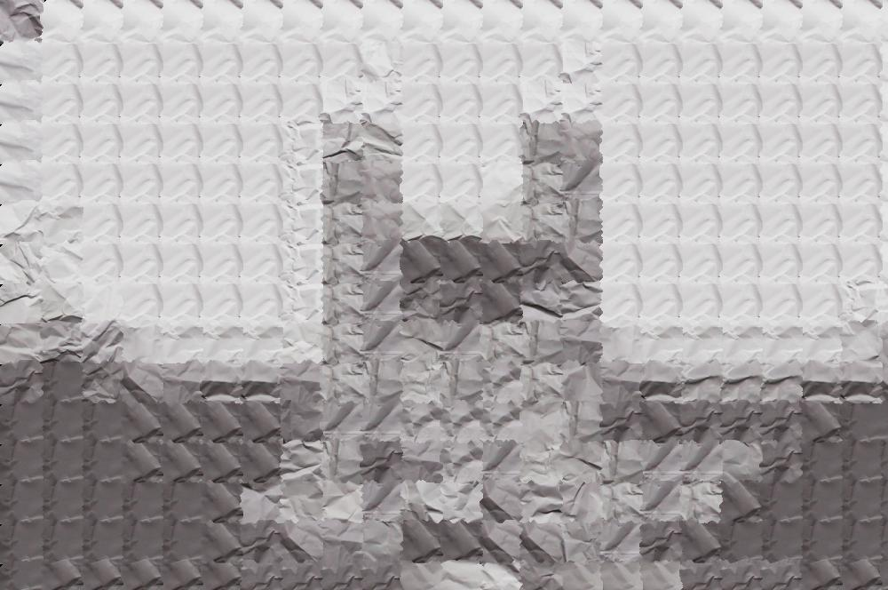

In many contexts, it may be desirable to extend an image (to enlarge an image, to fill in an
empty space, etc.). Although it would be possible to simply copy existing parts of the
image—or elements from other images—the repetition of elements of an image may be
obviously artificial or aesthetically unsatisfying. Instead, a system to compute extensions to
existing patterns within the image may result in more pleasing images.
The basic gist of this project is to synthesize new images from 'textures' found in source
images. Textures are images (or portions of images) which represent a single object of type of
object—for example, a texture may be a brick wall, an image of waves in water or grass,
foliage, etc. Within these textures may be both high- and low-frequency patterns (e.g. the
rectangular shape of bricks in addition to the coarseness of the surface). Texture synthesis
relies on identifying and extending these patterns to create an artificial image with the same
appearance and properties as an actual photograph, blending seamlessly with the photographed
texture in the original image.
In addition to extending images with texture synthesis, images can be recreated with a different
texture: by matching elements of a target image with regions of a source texture image, a
synthetic image can be created with the low-frequency details of one image—the basic
appearance of a face, for instance—with the texture of another image.
This project implements both of these elements using a relatively efficient block-based
algorithm which finds a small chunk of the texture image which matches with the immediate
surroundings and fits it into an arbitrarily sized synthetic image.
All code written for this project can be found in my repository
here.
Both of the approaches described below rely on the same basic method: blocks of the texture image are copied into the synthetic image based on how well they align with the surrounding blocks already in place (e.g. if the pattern present in surrounding blocks would be more or less seamlessly continued in the newly inserted block). This is accomplished by computing the SSD error of an overlapping region between the blocks already placed in the synthetic image and candidate blocks from the source image. The difference between the methodologies comes in the final step: block-based synthesis simply copies these texture blocks exactly as they appeared in the source image (meaning as rectangular patches), whereas the minimum-error boundary cut approach attempts to find a cut which will minimize the appearance of the 'seam' between neighboring blocks.
function synthesized = synthesizeFromTexture(srcTexture, patchDims, overlap, synthDims)
synthesized = zeros(synthDims);
for i = 1:patchDims(2) - overlap(2):synthDims(2)
for j = 1:patchDims(1) - overlap(1):synthDims(1)
xBound = i + patchDims(2) - 1;
if xBound > synthDims(2)
xBound = synthDims(2);
end
yBound = j + patchDims(1) - 1;
if yBound > synthDims(1)
yBound = synthDims(1);
end
targetPatch = synthesized(j:yBound, i:xBound, :);
bestErr = Inf;
bestPatch = [0, 0];
for ii = 1:size(targetPatch,2):size(srcTexture, 2) - size(targetPatch,2)
for jj = 1:size(targetPatch,1):size(srcTexture, 1) - size(targetPatch,1)
testPatch = srcTexture(jj:jj + size(targetPatch,1) - 1, ...
ii:ii + size(targetPatch,2) - 1, :).*(targetPatch ~= 0);
testErrSurface = (testPatch - targetPatch).^2;
testErr = sum(testErrSurface(:));
if testErr < bestErr
bestErr = testErr;
bestPatch = [ii, jj];
end
end
end
synthesized(j:j + size(targetPatch,1) - 1, i:i + size(targetPatch,2) - 1, :) = ...
srcTexture(bestPatch(2):bestPatch(2) + size(targetPatch,1) - 1, ...
bestPatch(1):bestPatch(1) + size(targetPatch,2) - 1, :);
end
end
end
overlap variable). The base block
size is given as a parameter, as are the desired dimensions of the synthesized image. To see the
results of varying the patchDims and overlap variables, refer to the
Extra Credit section.


width = overlap(1);
if size(targetPatch,1) < overlap(1)
width = size(targetPatch,1);
end
height = overlap(2);
if size(targetPatch,2) < overlap(2)
height = size(targetPatch,2);
end
vertMask = horzcat(minErrCut(rgb2gray(bestErrSurface(1:width,:,:))'), ...
ones(size(targetPatch,2), size(targetPatch,1)-width))';
horizMask = vertcat(minErrCut(rgb2gray(bestErrSurface(:,1:height,:)))', ...
ones(size(targetPatch,2)-height, size(targetPatch,1)))';
combinedMask = repmat(vertMask & horizMask, [1, 1, 3]);
texPatch = srcTexture(bestPatch(2):bestPatch(2) + size(targetPatch,1) - 1, ...
bestPatch(1):bestPatch(1) + size(targetPatch,2) - 1, :);
newPatch = combinedMask.*texPatch + (1 - combinedMask).*synthesized(j:j + ...
size(targetPatch,1) - 1, i:i + size(targetPatch,2) - 1, :);
synthesized(j:j + size(targetPatch,1) - 1, i:i + size(targetPatch,2) - 1, :) = newPatch;
minErrCut function given in the
listing below. This mask is then used to sample from both the blocks already inserted into
the synthetic image and from the new block being inserted, resulting in a more seamless
transition between blocks.
E = zeros(size(errSurface));
E(1,:) = errSurface(1,:);
for i = 2:size(errSurface,1)
for j = 1:size(errSurface,2)
minimum = E(i-1,j);
if j > 1 && E(i-1,j-1) < minimum
minimum = E(i-1,j-1);
end
if j < size(errSurface,2) && E(i-1, j+1) < minimum
minimum = E(i-1, j+1);
end
E(i,j) = errSurface(i,j) + minimum;
end
end
cutMask = zeros(size(errSurface));
[~, cutLocation] = min(E(size(errSurface,1),:));
cutMask(size(errSurface,1), cutLocation:size(errSurface,2)) = 1;
for i = size(errSurface,1)-1:-1:1
bestCutLoc = cutLocation;
bestCutErr = E(i, bestCutLoc);
if cutLocation > 1 && E(i, cutLocation - 1) < bestCutErr
bestCutLoc = cutLocation - 1;
bestCutErr = E(i, bestCutLoc);
end
if cutLocation < size(errSurface,2) && E(i, cutLocation + 1) < bestCutErr
bestCutLoc = cutLocation + 1;
end
cutLocation = bestCutLoc;
cutMask(i, cutLocation:size(errSurface,2)) = 1;
end
The main difference between texture synthesis and texture transfer is in how the error for a
given block is selected: for texture transfer, the selected block must also match some target
image which is being retextured. This is accomplished quite simply with the following code:
testErrSurface = (testPatch - targetPatch).^2;
overlapErr = sum(testErrSurface(:));
correspondErrSurface = ...
(imgaussfilt(testPatch, 2) - imgaussfilt(contentPatch, 2)).^2;
correspondErr = sum(correspondErrSurface(:));
testErr = correspondence*overlapErr + (1 - correspondence)*correspondErr;
correspondence parameter, relative weight cn be given to
either producing a relatively seamless image (in which the texture flows naturally) and an
image which contains a strong version of the target image—two goals which may be at odds
with one another, meaning that setting the correct value can be an art in itself (see the Extra
Credit section below for a demonstration of the effect of the correspondence variable).

| Block Size | ||||
|---|---|---|---|---|
| 100x100 | 50x50 | 25x25 | ||
| Overlap | ||||
| 10 | ||||
| 5 | ||||
| 2 | ||||
| Correspondence | ||||
|---|---|---|---|---|
| 0.00 | 0.25 | 0.50 | 0.75 | 1.00 |
|  | ||||
{kind=link}
{kind=link}
{kind=link}
{kind=link}
{kind=link}
{kind=link}
{kind=link}
{kind=link}
{kind=link}
{kind=link}
{kind=link}
{kind=link}
{kind=link}
{kind=link}